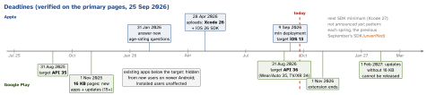

engineering · folio
In one line: Two gatekeepers with different levers. Apple reviews every build against the App Review Guidelines (90 % reviewed in < 24 h) and each spring requires the new Xcode/SDK for uploads. Google Play runs policy checks and yearly raises the target API level, now also 16 KB page-size support. Knowing the hot-spot guidelines, how to answer a rejection, and the dates on your calendar is part of senior release ownership.
Download PDF Print view LaTeX source


App Review Guidelines — the hot spots
| 2.1 | App completeness: final build, no placeholders, no crashes; demo account + backend live in Review Notes; IAPs complete and visible (2.1(b)). |
| 2.3 | Accurate metadata: no hidden/dormant features, new features described in Notes (2.3.1); screenshots show the app in use, not splash/login (2.3.3); name ≤ 30 chars, no keyword stuffing (2.3.7). |
| 2.5.1 | public APIs only; runs on the currently shipping OS. |
| 2.5.2 | self-contained: may not download code that changes features — the line RN/Expo OTA must respect. |
| 3.1.1 | unlocking digital features/content ⇒ In-App Purchase; no license keys, QR codes, crypto to unlock. 3.1.1(a): link-out entitlement; not needed for US-storefront buttons/links. |
| 3.1.3 | exceptions: reader apps (a), multiplatform (b), enterprise (c), person-to-person (d), physical goods/services (e). |
| 4.2 | minimum functionality: more than a repackaged website. 4.3 spam: no clones, no bundle-ID variants of one app. |
| 4.8 | third-party/social login for the primary account ⇒ also offer a login that limits data to name + email, lets the user hide the email, no ad tracking without consent (Sign in with Apple qualifies). |
| 5.1.1(v) | account creation ⇒ in-app account deletion (details: privacy-compliance). |
Common rejections — and the fix
- Crash on the reviewer’s device / missing demo login / backend down during review → test the Release build on a clean device, put credentials + steps in Review Notes.
- Metadata mismatch (screenshots from another version, “beta” wording, other platforms’ names).
- Purpose strings that don’t say why (“Camera needed” → “to scan receipts”).
- Digital goods sold outside IAP; a web wrapper with no native value; Google-only login (4.8).
- Demanding personal data the core function does not need (5.1.1(v): “may not require users to enter personal information to function” unless directly relevant or required by law).
Traps
- Discovering the SDK minimum in April from a failed upload — track it with the Xcode upgrade plan.
- “OTA lets us ship features without review” — 2.5.2: fixes yes, new functionality no.
- Arguing in the reply instead of showing: a 30-second video beats three paragraphs.
- “16 KB is an Android thing, we’re RN” — RN ships
.sofiles; you are affected.
Answering a rejection
- Read the cited guideline number; reproduce what the reviewer saw.
- Misunderstanding → reply in App Store Connect’s App Review messages: steps, a demo video, which screen shows the feature. Polite, specific, no argument about other apps.
- Real issue → fix, resubmit, say what changed in Review Notes.
- Bug-fix update blocked by an unrelated older issue → you may fix that in the next submission unless it is a legal or safety concern: reply asking to approve this one.
- Still disagree → appeal to the App Review Board: one appeal per rejection, specific reasons it complies; answer open questions first.
- Urgent: expedited review (critical bug fix with repro steps, or a dated event). 30-min App Review appointments exist for grey areas — ask before building.
Google Play specifics
- Target API =
targetSdk: raising it opts you into new runtime behaviour (API 35: edge-to-edge enforced), so budget the work, not just the number. - 16 KB pages only matter with native code (
.so: NDK, RN, most SDKs); Java/Kotlin-only apps already comply. AGP ≥ 8.5.1, NDK r28+ aligns by default; verify with APK Analyzer,zipalign -c -P 16orllvm-objdump -p(align 2**14); test on a 16 KB emulator image. - Data safety form: required for every app, even one that collects nothing; must match the app, its SDKs and the privacy policy.
- Tracks: internal (≤ 100 testers, minutes, no full review) → closed → open → production (staged %). New personal accounts (after 13 Nov 2023): a closed test with 12 testers opted in for 14 days before production access.